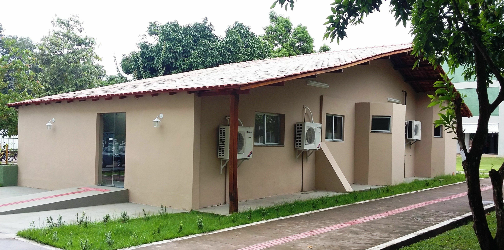

Moysés Banarrós Israel

Memorália da UFAM: Um Tributo a Moysés Benarrós Israel
A Memorália Moysés Benarrós Israel é um espaço cultural criado em homenagem ao empresário e filantropo que teve um papel crucial no desenvolvimento educacional de Itacoatiara, Amazonas. Na década de 1990, Moysés doou um terreno de 18.145,62 metros quadrados para a Universidade Federal do Amazonas (UFAM), viabilizando a instalação de um campus permanente na cidade. Hoje, esse campus abriga nove cursos de graduação e um programa de mestrado, sendo uma referência em educação superior para a região e um marco para o progresso local.
A doação desse terreno foi um gesto visionário de Moysés Benarrós Israel, que não acreditava no poder transformador da educação. Com essa contribuição, ele proporcionou oportunidades para que milhares de jovens do interior do Amazonas tivessem acesso à formação acadêmica de qualidade. Essa ação não apenas fortaleceu a presença da UFAM na região, mas também contribuiu para a formação de profissionais em diversas áreas do conhecimento.
Como forma de agradecimento e reconhecimento por sua generosidade, a UFAM, por meio do Instituto de Ciências Exatas e Tecnologia (ICET), inaugurou em 30 de maio de 2015 a Memorália Moysés Benarrós Israel. O espaço, localizado na antiga residência do homenageado, preserva mais de cem itens que celebram sua trajetória. Entre os objetos expostos estão fotos de eventos significativos, diplomas de sócio benemérito, medalhas de mérito educacional e outros itens que refletem o impacto de suas contribuições nos campos empresarial, cultural e educacional.
A apresentação de inauguração foi um momento marcante, reunindo estudantes, professores, técnicos e autoridades locais. A reitora da UFAM, Márcia Perales Mendes Silva, destacou o papel fundamental de Moysés no fortalecimento da educação no Amazonas e na criação de condições para o desenvolvimento social e econômico da região. Segundo o diretor do ICET, professor Fábio Medeiros Ferreira, o local foi mantido conforme o desejo do empresário, preservando sua memória enquanto as instalações da universidade eram erguidas para atender às crescentes demandas educacionais.
A Memorália é mais do que um espaço de preservação histórica; é um símbolo do impacto positivo que a visão de um indivíduo pode ter sobre uma comunidade inteira. Além de honrar a memória de Moysés Benarrós Israel, ela inspirou novas gerações a seguirem seu exemplo de altruísmo e compromisso com o progresso coletivo. O legado de Moysés permanece vivo, não apenas na infraestrutura educacional que ajudou a construir, mas também nos sonhos que se realizam diariamente graças à sua contribuição.